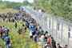

< < < Back
The Migrant Crisis Exposes The Hypocrisy Of The European Union And Croatian Government – Return Of Kings
With the morning news on September 18th announcing that the Croatian housing, transport and feeding capacities had been hopelessly overwhelmed by over 15,000 refugees (plus an unknown number of those that crossed without any registration), Croatia woke up and found itself in a crisis of massive proportions.

To give you some sense of scale, Croatia is ready to provide care and shelter to just 4,000 refugees at any single time, and in comparison to its population and GDP, it it in the same situation as Germany would be if it suddenly took in half a million people. However, in order to understand the situation in Croatia better, some background is needed.
Who are the migrants?
The Migrants are former residents of various countries in the Middle East, Africa and Asia, and mostly hail from Syria. The other most sizable groups are Afghan, Pakistani and Eritrean. Most migrants are arriving from Syria for the simple reason that the country is enveloped in a civil war and people are fleeing the destruction and war crimes.
However, keep in mind that being Syrian both increases sympathy and raises the chance of being granted asylum and other forms of aid, and since many countries (such as Germany, Austria and Sweden) consider any identification process “racist,” there is a powerful motivation among the migrants to declare themselves as Syrian, leading to the ballooning of that nationality.
We have seen the same in Croatia, where Mr. Shoukry, a Syrian dentist who had immigrated legally decades ago and is now serving as an interpreter, told the media that “most of these migrants are not from Syria, and many do not even speak Arabic. Actually, from what I can see, Syrians are the minority.”
A similar example can be seen in this tragicomic story from Sweden, where an obviously adult Afghan man has been housed in a Swedish orphanage along with 12-year old girls, simply because the government thinks that age determination by teeth examination is “racist” and “xenophobic”:

What could possibly go wrong?
There is a sense of karmic justice in having an overwhelming swarm of migrants appear at Croatia’s doorstep; Croatia has been one among the many USA-NATO puppets who openly financed and armed the infamous ISIS (sorry, “moderate Syrian rebels”). Together with supporting color revolutions around the world, one does not need to look far to see how Croatia is generally being aligned with strong foreign interests and social justice movements stemming from the EU, NATO and USA, and bears direct responsibility for the Syrian bloodshed, as well as the responsibility for dealing with the fallout in the form of refugees.
For that reason, and as urged by its only alternative political party Živi zid (The Living Wall), Croatia should immediately leave the NATO.
Migrants in Croatia and the brainwashing of the Croatian people
Because the ruling political party, SDP (Croatian social-democrats) and its chief and prime minister Zoran Milanović, are merely puppets of Angela Merkel who has invited unlimited numbers of migrants into the EU unconditionally, Croatian institutions and media have began a powerful propaganda campaign about the “refugees” and the need to help them. For example, any news reports about the migrants are led by images like this:
However, as clearly supported by stats from border and police agencies, most (70%) of the migrants are single adult males. Vivid descriptions of “pregnant women falling down exhausted” and “children screaming” are used to drum up public sympathy, in direct contrast to the actual situation on the ground, which can be seen in this video:
https://www.facebook.com/priznajem.HRVATsam/videos/885134608234304/
Attentive readers will notice that I am referring to the incoming people as “migrants,” not “refugees.” This is because, as thoroughly ignored by the media, most of them are ordinary economic migrants.
As noted before, there is a civil war in Syria that is contributing to the migrant crisis, but it is clear that most migrants actually come from countries in which not a single war condition exists. Furthermore, most “refugees”behave in ways that are not expected all from people who are truly fleeing destruction and killing. For example, here are a few incidents in the entire sea of incidents that have been recorded among the migrants so far:
- On the way towards Austria, Germany and Sweden, there are at least 10 peaceful countries where “refugees” could easily stop and settle. Only two out of these countries (Turkey and Lebanon) are already overflowing with immigrants; countries like Albania, Bulgaria, Greece, Armenia, Serbia and Croatia are all available and capable of settling many.
- This is further reinforced by the fact that, out of 15,000 registered migrants in Croatia, only one ‘refugee’ has requested asylum from that country so far, which represents a staggeringly low 0.006%.
- Armed robbery of a supermarket in Germany
-
Destruction of housing and shelter provided to the migrants, even high-end shelter such as in 3-star hotels
Hotel ‘Porin’ in the Dugave area of Zagreb, currently being devastated by the migrants. A news reporter was hit by a brick thrown from the hotel and almost killed.
Now, dear readers, your mileage may vary, but if I were on the run from slaughter, rape and destruction, I would be very grateful to anyone who gave me shelter and would never attack my own hosts, throw away their gifts or demand to be placed here or there.
My recommendation is that all countries, Croatia included, strictly monitor these people and do not hesitate to throw out anyone who is not appreciative of their efforts. That, however, leads us to the most shameful point of all:
The shameful campaign to liken illegal economic migrants to historical Croatian emigrants and refugees
A common argument heard in the Croatian media is perhaps the most insidious one: “Croatians used to emigrate a lot during the Yugoslav years (2nd half of 20th century), and many Croatian refugees fled during the Croatian War of Independence (1991-1995).” We were treated kindly, so we owe it to the Syrians and others to help them out.
Sadly, there is no similarity at all between these two cases. Croatian economic migrants in the Yugoslav era were all legal migrants, patiently applying for work visas, green cards, and residence permits, instead of just jumping the fence into Germany, USA, Australia or any other place. While residing in these countries, they worked hard and respected local laws, and had a reputation as skilled and devoted workers who caused zero trouble.
Furthermore, Croatian war refugees also didn’t insult, attack or steal from their hosts all around Europe. They were appreciative of whatever aid was provided to them, often waiting out the war in ramshackle conditions that would make Germany’s ‘refugee housing’ look like a 5-star hotel.
If the Croatian people, either economic migrants or war refugees, had been behaving like in the picture provided above, they would have been universally condemned as ungrateful barbarians, and would not have been welcome anywhere.
Some people seem to have issue with this picture, believing the “€1000” remark to be “overblown.” As hard as it might be to believe, not only is it NOT overblown, but it is actually pretty tame. Read on:
Under the new rules, which will come into effect from September, an asylum seeker without children will receive 5,945 kroner (797 euros, $882) per month in benefits, almost half the 10,849 kroner (1470 euros) they receive currently.
As a reaction to this measure, migrants have been avoiding Denmark in favor of Sweden, both by not crossing its territory, or by crossing it but refusing to step outside their transport in order to avoid the terrible fate of accidentally being registered in a country with less than €1000 per month social support.
Now, dear readers, I don’t know about you, but as an ordinary Croatian person, I would love to live in Denmark even without any social support!
Why have the migrants chosen Croatia as their route?
Previously, the migrants used to make their way to Western Europe through Hungary. However, Hungary is led by Victor Orban, an independent politician who is not a puppet of foreign powers and who cares about his people.
In contrast to this, the Croatian Prime Minister Zoran Milanović is a puppet of the European Union as well as a fanatical SJW on his own, and has opened the country’s gates to an uncontrollable migrant wave, justifying it with empty catchphrases like “these are people, not sacks of cabbages” (while ruthlessly allowing banks to foreclose people’s only homes) and claimed that “Croatia would offer every refugee a job” (in a country with a staggering 17.5% unemployment rate).
Zoran Milanović, the ultimate Croatian cuckold
Zoran Milanović is simply following the leadership of his overlords, the German Chancellor Angela Merkel, and the European Commission president Jean-Claude Juncker, who have similarly invited hordes of migrants into their countries unconditionally, completely ignoring the wishes of the people they represent and silencing any opposition to their crazed goals.
Further media censorship and media misrepresentation
All major Croatian media (Jutarnji list, Večernji list, Nova TV, T-Portal, RTL…) are engaged in a relentless campaign to silence any complaints about the unbearable number of migrants and the immense hypocrisy of a government that feeds tens of thousands of migrants while letting tens of thousands of its citizens starve in the streets.
The media are behaving in a way that can only be likened to the state propaganda apparatus of the USSR, reporting only on carefully selected events and mixing in heavy political bias. Here are just some examples:
Unhappy with the situation, a group of migrants broke through the police cordon and started walking on the railway tracks. The police managed to block them off again and return them to the train station, but they are still nervous and there’s no telling how long the situation will be under control.
Sure, the issue is not the migrants being uncivilized, ungrateful and spoiled, no, the issue is that they’re “nervous.” Great job by Jutarnji list!
This same fanatically left newspaper ran an editorial saying that “the worst thing about the refugee crisis was that it was going to be used as ammunition for the right and far-right parties and boost their ratings“. Absolutely, I can think of no bigger problem right now.
Everyone was professional and kind to the immigrants,” said the Nova TV reporter Andrija Jarak. “There were a few incidents where policemen had to use force and carry out arrests, but certainly that was caused by exhaustion.
Yeah, the policemen weren’t attacked because the migrants have zero respect for law and order, but because of “exhaustion.” Very objective report by Nova TV.
Regarding other countries, the media has also been busy slandering Hungary, Czech Republic and Slovakia (all countries that protected their borders and did not bow to EU pressure) as neo-Nazi strongholds and primitive barbarians. They even trotted out the example of Hungarian refugees in Austria in 1956, despite these migrants being (the same as Croatian ones) peaceful, respectful, and subjected to many harsh regulations that they had to follow in their host countries.
The reasonable idea – that every European country should take in as many migrants as they want, but only through their own independent decisions, within their own borders, and with the insistence that the migrants respect its customs and aid – has not been mentioned a single time in the Croatian media. The curtain of censorship is very thick, and very few people dare risking being blasted as racists and xenophobes.
Even if no migrant settles here, the migrant crisis is devastating Croatia
The country with an unemployment rate of 17.5% and where 21% of the population lives in poverty, cannot afford to have tens of thousands of migrants roaming through its most fertile regions and causing havoc and crime. The entire area of eastern Croatia is paralyzed, with traffic slow or blocked, international traffic completely cut off, agriculture has stopped and children are prevented from attending schools.
Medical resources and construction machinery have been completely rerouted from the local populace, which has suffered devastating floods last year, to serve the incoming migrants.
How to respond
For recklessly inviting an uncontrolled number of migrants into an already hurting country, the Prime Minister Zoran Milanović should immediately submit his resignation. Following that, he should stand trial for high treason, same as our last Prime Minister Ivo Sanader is currently being tried for corruption. You might think that the phrase “high treason” is a bit harsh, but the articles 135-141 of the Croatian Penal Law are quite clear:
High Treason; punishment shall be applied to… whomever prevents the laws of the Republic of Croatia from functioning in an area… whomever introduces a foreign system of government, or who leads the country into a state of submission or dependence towards any other state… whomever initiates an incident hazardous to the public and causing personal insecurity to citizens.
I am strongly urging the Croatian government to immediately close the border and to make any further acceptance of illegal migrants dependent on the will of the Croatian people, and subject to harsh oversight and possible deportation in the case of violations of local laws.
Read More: 16 Tips For Having Sex With Croatian Girls


{kind=link}
{kind=link}
{kind=link}
{kind=link}
{kind=link}
{kind=link}
{kind=link}